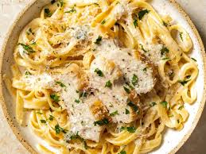

Chicken Alfredo

Description
Enjoy a restaurant-quality meal at home with this rich, creamy chicken alfredo. It is an incredibly simple dish that requires minimal effort and delivers maximum comfort.
Ingredients
- Chicken Breast
- Fettuccine Noodles
- Heavy Cream
- Butter
- Parmesan Cheese
- Garlic and Seasoning
Directions
- Gather all ingredients and bring a large pot of lightly salted water to a rolling boil.
- Heat a large skillet over medium-high heat. Season chicken breasts and cook until golden brown and no longer pink, about 6 to 8 minutes per side. Slice into strips.
- Boil the fettuccine noodles in the pot of water for 8 to 10 minutes until tender. Drain thoroughly.
- Melt butter in a saucepan over medium heat. Stir in heavy cream, minced garlic, and grated Parmesan cheese; simmer gently for 5 minutes until the sauce thickens.
- Toss the drained noodles and sliced chicken directly into the warm alfredo sauce. Garnish with parsley and fresh black pepper before serving.